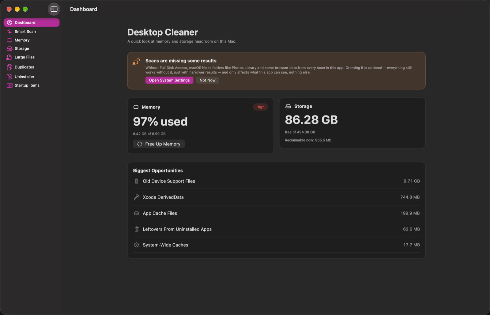
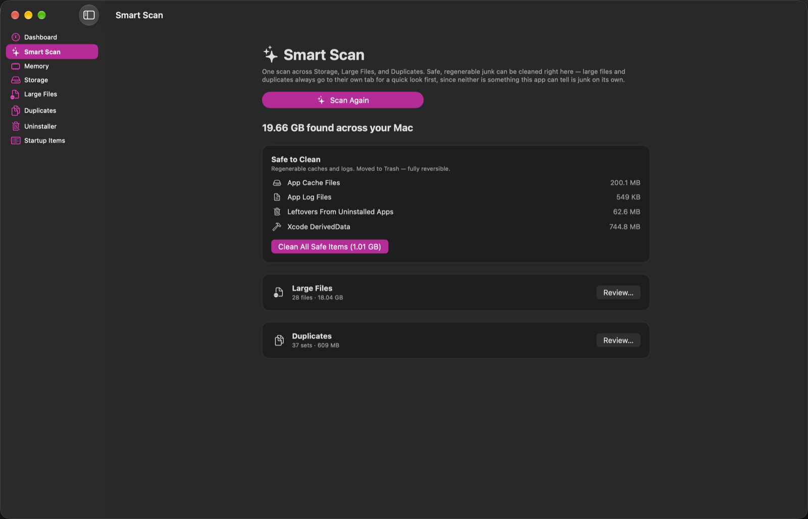
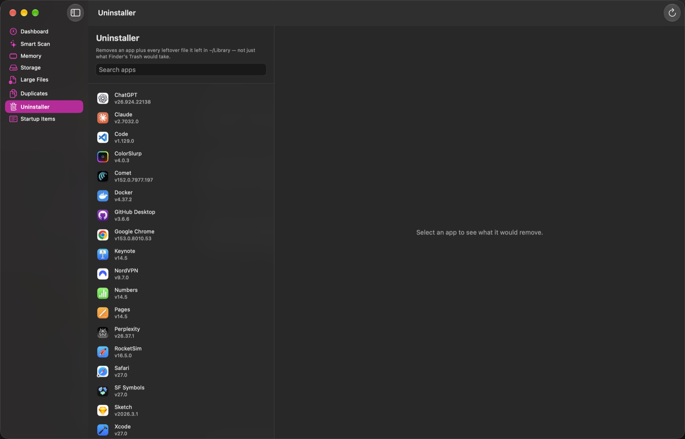

Desktop Cleaner finds the caches, large files, duplicates, and leftover app data quietly filling up your Mac — and shows you exactly what it found before anything is touched. Nothing is deleted without you seeing it first.

Each one does a specific, well-scoped job — no generic "optimize everything" button that you have to trust blindly.
One scan across storage, large files, and duplicates. Safe, regenerable junk can be cleaned right here — anything else goes to its own tab for a proper look first.
App caches, logs, dev tool caches, old device support files, Homebrew cleanup, and more — grouped by risk, with system-level items clearly marked as needing your password.
Live stats straight from the kernel's own counters — the same source Activity Monitor reads — plus a one-click way to ask macOS to purge reclaimable memory.
Individual files above a size threshold, anywhere in your home folder — the exports, disk images, and downloads no cache category would ever find.
Byte-for-byte identical files, grouped and ready to review. One copy always stays — nothing here is ever pre-selected for you.
Removes an app plus every leftover file it left behind in ~/Library — not just what dragging it to the Trash would take.

Smart Scan runs Storage, Large Files, and Duplicates together and gives you one number: how much space is actually reclaimable right now.

Dragging an app to the Trash leaves its caches, logs, preferences, and saved state behind — sometimes for years. The Uninstaller finds all of it.
Not "we minimize data collection" — there's no analytics SDK in this app to configure in the first place. You can verify every claim below yourself with a network monitor.
Scanning and reviewing never touches the network at all — everything happens on your own Mac.
No tracking of what you click, which features you use, or how often you open the app — ever.
You see the full report and choose to send it or not — nothing is ever sent automatically in the background.
Signed with a Developer ID, notarized, and distributed directly — not sandboxed into a reduced-feature App Store edition.
Free to scan and review. macOS 13 or later, Apple Silicon and Intel.